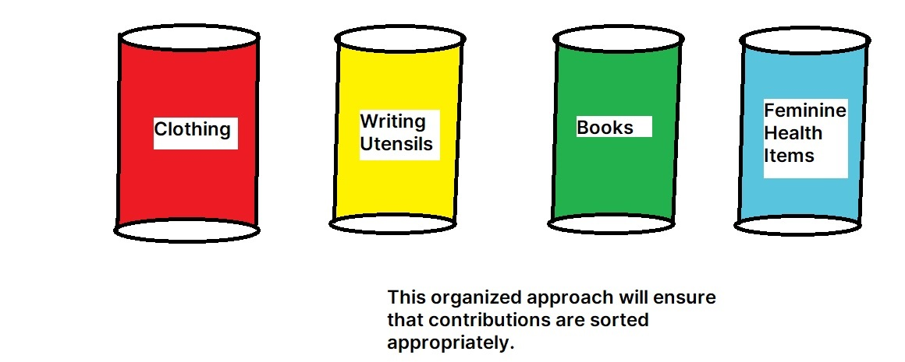

First, we'll set up a bank account to raise money. This will allow us to:
Our bank account is already on our GoFundMe page.
To streamline the process of contributing to our cause, we are establishing a dedicated donations account with the guidance of the reverend. This account will serve as a secure platform for monetary contributions, making it convenient for supporters to contribute from near and far.
In the backyard of our house, we'll implement an efficient barrel system to manage physical donations. Four barrels will be dedicated to specific categories: one for writing utensils, one for clothes, one for books, and another for feminine health items. This organized approach will ensure that contributions are sorted appropriately.
To facilitate the collection of physical donations, we will set up separate places for different types of items. These collection stations will be strategically located for easy drop-offs, allowing community members to contribute items such as clothing, books, writing utensils, and feminine health products. When we are done with donations, we will ship the items directly to the school and monitor the impact on the school, notifying donators of their impact.
We are excited to see the impact of our work. If you would like to support our cause, please click that button below to donate your money! Your support can make a big difference in these students' lives! Thank you, and God bless you for your genorosity!
He who has pity on the poor lends to the Lord, and He will pay back what he has given.
Proverbs 19:17 NKJV